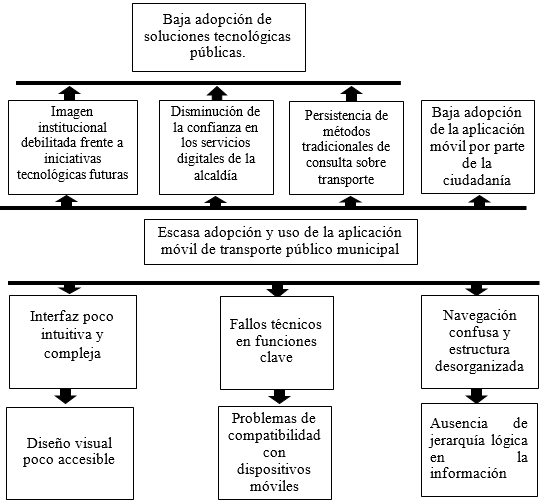

Introducción
El transporte público constituye un eje fundamental en la movilidad urbana, ya que permite a miles de ciudadanos desplazarse diariamente de manera accesible y eficiente. En este contexto, la Alcaldía de La Paz ha implementado una aplicación móvil destinada a brindar información sobre rutas, horarios, tarifas y anuncios relacionados con el servicio de transporte municipal.
Sin embargo, la experiencia de los usuarios con la aplicación no ha sido del todo satisfactoria. Se han identificado dificultades en la navegación, fallos en ciertas funciones y una interfaz que no resulta lo suficientemente intuitiva para todos los perfiles de usuarios. Estas limitaciones han derivado en una escasa adopción de la aplicación como herramienta confiable y en una percepción negativa de los servicios digitales municipales, lo que afecta la credibilidad de los esfuerzos de modernización tecnológica de la institución.
Este proyecto busca analizar la aplicación existente, identificar sus principales problemas de usabilidad y proponer mejoras en el diseño de la interfaz y en la experiencia de usuario. Con ello se pretende no solo optimizar la interacción de los ciudadanos con la aplicación, sino también fortalecer la confianza en los servicios digitales municipales y fomentar una mayor adopción de la herramienta.
Antecedentes
En los últimos años, diversas ciudades del mundo han apostado por el desarrollo de aplicaciones móviles que faciliten la gestión del transporte público. Ejemplos como Moovit, Google Maps Transit o aplicaciones municipales en Medellín y Ciudad de México han demostrado que la clave del éxito radica en interfaces simples, accesibles y centradas en el usuario.
En el caso de La Paz, la Alcaldía implementó una aplicación oficial con el objetivo de acercar la información del transporte público a la ciudadanía. La aplicación incluye funciones como consulta de rutas, horarios, tarifas, anuncios de servicio y canales de atención al usuario. No obstante, a pesar de su potencial, la herramienta no ha alcanzado el nivel de aceptación esperado.
Las principales críticas de los usuarios se centran en la complejidad de la interfaz, la dificultad para acceder rápidamente a la información deseada y la presencia de fallos técnicos que afectan la confiabilidad del sistema. Como resultado, gran parte de la población opta por recurrir a medios tradicionales de información, lo que limita el impacto de la aplicación y refuerza la percepción de que los servicios digitales municipales no cumplen con los estándares de calidad que la ciudadanía demanda.
Planteamiento del Problema
La aplicación móvil de la Alcaldía destinada a la gestión del transporte público en La Paz enfrenta serias limitaciones en cuanto a su usabilidad y confiabilidad. Aunque fue concebida como una herramienta para facilitar el acceso a información sobre rutas, horarios y tarifas, en la práctica no ha logrado consolidarse como un recurso confiable para la ciudadanía.
La escasa adopción de la aplicación se debe a que muchos usuarios perciben dificultades al navegar por la interfaz, encuentran fallos en ciertas funciones y consideran que la experiencia de uso no es lo suficientemente intuitiva. Esto provoca que gran parte de la población prefiera recurrir a medios tradicionales (consultas presenciales, llamadas telefónicas o información informal) en lugar de utilizar la aplicación.
Como consecuencia, se genera una percepción negativa de los servicios digitales municipales, ya que la aplicación, en lugar de fortalecer la confianza en la modernización tecnológica de la Alcaldía, transmite la idea de que las soluciones digitales ofrecidas carecen de calidad, mantenimiento y orientación al usuario. Esta percepción afecta no solo la imagen de la aplicación en sí, sino también la credibilidad de otros proyectos tecnológicos impulsados por la institución.
En síntesis, el problema central radica en que la aplicación de transporte público no cumple con las expectativas de los ciudadanos en términos de confiabilidad, facilidad de uso y valor práctico, lo que limita su impacto y debilita la confianza en la gestión digital municipal.
Árbol del Problema
Formulación del Problema
Los ciudadanos de La Paz experimentan dificultades al utilizar la aplicación móvil de transporte público debido a su baja usabilidad, errores funcionales y falta de diseño centrado en el usuario, lo que reduce la confianza en los servicios digitales municipales y limita la adopción de la herramienta.
Propósito del Estudio
El propósito general de este estudio es analizar la usabilidad, confiabilidad y diseño funcional de la aplicación móvil del Servicio de Transporte Municipal de La Paz, con el fin de identificar los principales problemas que limitan su adopción ciudadana y proponer mejoras técnicas y de experiencia de usuario.
Este estudio busca contribuir a los esfuerzos de modernización tecnológica de la Alcaldía de La Paz, fortaleciendo la confianza ciudadana en los servicios digitales municipales y promoviendo un modelo de aplicación centrada en las necesidades reales de los usuarios del transporte público.
Metodología
• Cualitativo: se enfocará en la percepción y comportamiento de los usuarios a través de entrevistas semiestructuradas y observación directa del uso de la aplicación.
• Cuantitativo: se obtendrán datos mediante encuestas, mediciones de tiempo de uso, frecuencia de fallos y análisis de métricas de interacción.